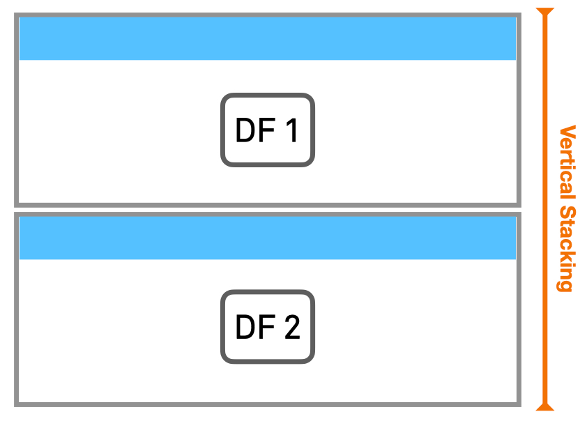
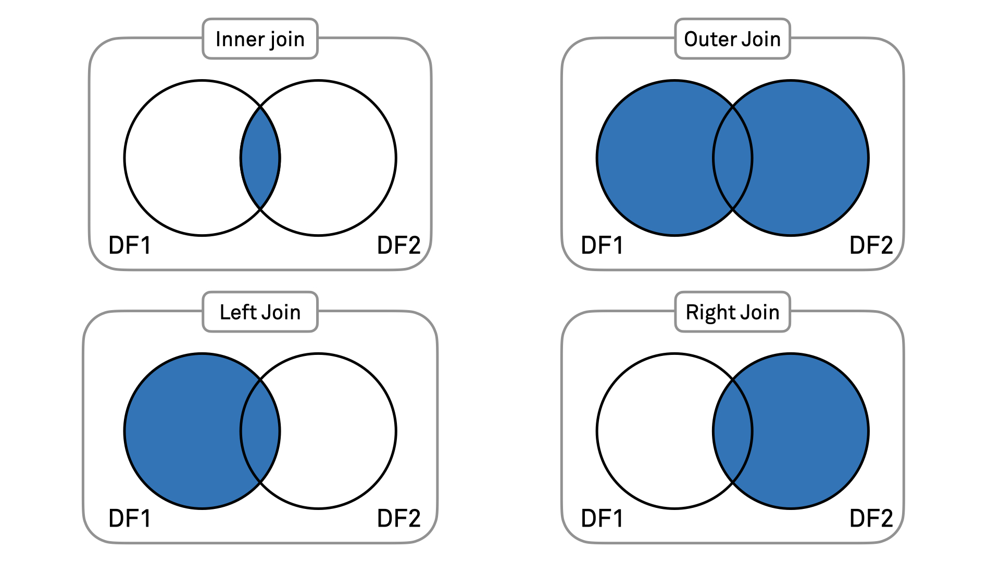

import pandas as pd8 Combining DataFrames
8.1 Combining DataFrames
Previously, we have seen how to analyze and manipulate data in a single DataFrame. However, you will often find data saved into different files and, therefore, you may need to deal with several different pandas DataFrames.
In this session we will explore different ways of combining DataFrames into a single DataFrame.
Let’s start loading the pandas library, reading two data sets into DataFrames, and having a quick look at the tabular data: surveys.csv and species.csv
surveys_df = pd.read_csv("../course_materials/data/surveys.csv", keep_default_na=False, na_values=[""])
species_df = pd.read_csv("../course_materials/data/species.csv", keep_default_na=False, na_values=[""])print(surveys_df.info())
surveys_df.head()<class 'pandas.core.frame.DataFrame'>
RangeIndex: 35549 entries, 0 to 35548
Data columns (total 9 columns):
# Column Non-Null Count Dtype
--- ------ -------------- -----
0 record_id 35549 non-null int64
1 month 35549 non-null int64
2 day 35549 non-null int64
3 year 35549 non-null int64
4 plot_id 35549 non-null int64
5 species_id 34786 non-null object
6 sex 33038 non-null object
7 hindfoot_length 31438 non-null float64
8 weight 32283 non-null float64
dtypes: float64(2), int64(5), object(2)
memory usage: 2.4+ MB
None| record_id | month | day | year | plot_id | species_id | sex | hindfoot_length | weight | |
|---|---|---|---|---|---|---|---|---|---|
| 0 | 1 | 7 | 16 | 1977 | 2 | NL | M | 32.0 | NaN |
| 1 | 2 | 7 | 16 | 1977 | 3 | NL | M | 33.0 | NaN |
| 2 | 3 | 7 | 16 | 1977 | 2 | DM | F | 37.0 | NaN |
| 3 | 4 | 7 | 16 | 1977 | 7 | DM | M | 36.0 | NaN |
| 4 | 5 | 7 | 16 | 1977 | 3 | DM | M | 35.0 | NaN |
print(species_df.info())
species_df.head()<class 'pandas.core.frame.DataFrame'>
RangeIndex: 54 entries, 0 to 53
Data columns (total 4 columns):
# Column Non-Null Count Dtype
--- ------ -------------- -----
0 species_id 54 non-null object
1 genus 54 non-null object
2 species 54 non-null object
3 taxa 54 non-null object
dtypes: object(4)
memory usage: 1.8+ KB
None| species_id | genus | species | taxa | |
|---|---|---|---|---|
| 0 | AB | Amphispiza | bilineata | Bird |
| 1 | AH | Ammospermophilus | harrisi | Rodent |
| 2 | AS | Ammodramus | savannarum | Bird |
| 3 | BA | Baiomys | taylori | Rodent |
| 4 | CB | Campylorhynchus | brunneicapillus | Bird |
We now have two DataFrames. The first, surveys_df, contains information on individuals of a species recorded in a survey, while the second, species_df, contains more detailed information on each species.
8.2 Concatenating DataFrames
The first way we will combine DataFrames is concatenation, i.e. simply putting DataFrames one after the other either verically or horizontally.
Concatenation can be used if the DataFrames are similar, meaning that they either have the same rows or columns. We will see examples of this later.
To concatenate two DataFrames you will use the function pd.concat(), specifying as arguments the DataFrames to concatenate and axis=0 or axis=1 for vertical or horizontal concatenation, respectively.
Let us first obtain two small DataFrames from the larger surveys.csv dataset.
# Subsetting DataFrames
surveys_df_sub_first10 = surveys_df.head(10)
surveys_df_sub_last10 = surveys_df.tail(10)We now have two DataFrames, one with the first ten rows of the original dataset, and another with the last ten rows.
8.2.1 Vertical concatenation
Let’s start with vertical stacking. In this case the two DataFrames are simply stacked ‘on top of’ eachother (remember to specifyaxis=0).

Vertical stacking can be understood as combining two DataFrames that have different sets of the same type of data. In our example, it may be that one field researcher has registered the first ten entries, and another did the last ten, both using the same laboratory sheets. They both wrote down the same information (weight, species, and so on) of all different individuals. If we combine them, we have one list of twenty records, rather than two lists of ten.
# Stack the DataFrames on top of each other
vertical_stack = pd.concat([surveys_df_sub_first10, surveys_df_sub_last10], axis=0)print(vertical_stack.info())
vertical_stack<class 'pandas.core.frame.DataFrame'>
Int64Index: 20 entries, 0 to 35548
Data columns (total 9 columns):
# Column Non-Null Count Dtype
--- ------ -------------- -----
0 record_id 20 non-null int64
1 month 20 non-null int64
2 day 20 non-null int64
3 year 20 non-null int64
4 plot_id 20 non-null int64
5 species_id 19 non-null object
6 sex 16 non-null object
7 hindfoot_length 15 non-null float64
8 weight 6 non-null float64
dtypes: float64(2), int64(5), object(2)
memory usage: 1.6+ KB
None| record_id | month | day | year | plot_id | species_id | sex | hindfoot_length | weight | |
|---|---|---|---|---|---|---|---|---|---|
| 0 | 1 | 7 | 16 | 1977 | 2 | NL | M | 32.0 | NaN |
| 1 | 2 | 7 | 16 | 1977 | 3 | NL | M | 33.0 | NaN |
| 2 | 3 | 7 | 16 | 1977 | 2 | DM | F | 37.0 | NaN |
| 3 | 4 | 7 | 16 | 1977 | 7 | DM | M | 36.0 | NaN |
| 4 | 5 | 7 | 16 | 1977 | 3 | DM | M | 35.0 | NaN |
| 5 | 6 | 7 | 16 | 1977 | 1 | PF | M | 14.0 | NaN |
| 6 | 7 | 7 | 16 | 1977 | 2 | PE | F | NaN | NaN |
| 7 | 8 | 7 | 16 | 1977 | 1 | DM | M | 37.0 | NaN |
| 8 | 9 | 7 | 16 | 1977 | 1 | DM | F | 34.0 | NaN |
| 9 | 10 | 7 | 16 | 1977 | 6 | PF | F | 20.0 | NaN |
| 35539 | 35540 | 12 | 31 | 2002 | 15 | PB | F | 26.0 | 23.0 |
| 35540 | 35541 | 12 | 31 | 2002 | 15 | PB | F | 24.0 | 31.0 |
| 35541 | 35542 | 12 | 31 | 2002 | 15 | PB | F | 26.0 | 29.0 |
| 35542 | 35543 | 12 | 31 | 2002 | 15 | PB | F | 27.0 | 34.0 |
| 35543 | 35544 | 12 | 31 | 2002 | 15 | US | NaN | NaN | NaN |
| 35544 | 35545 | 12 | 31 | 2002 | 15 | AH | NaN | NaN | NaN |
| 35545 | 35546 | 12 | 31 | 2002 | 15 | AH | NaN | NaN | NaN |
| 35546 | 35547 | 12 | 31 | 2002 | 10 | RM | F | 15.0 | 14.0 |
| 35547 | 35548 | 12 | 31 | 2002 | 7 | DO | M | 36.0 | 51.0 |
| 35548 | 35549 | 12 | 31 | 2002 | 5 | NaN | NaN | NaN | NaN |
The resulting DataFrame (vertical_stack) consists, as expected, of 20 rows. These are the result of the first and last 10 rows of our original DataFrame surveys_df.
You may have noticed that the last ten rows have very high index, not consecutive with the first ten rows. This is because concatenation preserves the indices of the two original DataFrames. If you want a brand new set of indices for your concateneted DataFrame, simply reset the indices using the method .reset_index(). Notice that this adds a column index to your DataFrame, that maintains the original index. If you pass drop=True into the function, you will avoid the addition of this column.
vertical_stack.reset_index()| index | record_id | month | day | year | plot_id | species_id | sex | hindfoot_length | weight | |
|---|---|---|---|---|---|---|---|---|---|---|
| 0 | 0 | 1 | 7 | 16 | 1977 | 2 | NL | M | 32.0 | NaN |
| 1 | 1 | 2 | 7 | 16 | 1977 | 3 | NL | M | 33.0 | NaN |
| 2 | 2 | 3 | 7 | 16 | 1977 | 2 | DM | F | 37.0 | NaN |
| 3 | 3 | 4 | 7 | 16 | 1977 | 7 | DM | M | 36.0 | NaN |
| 4 | 4 | 5 | 7 | 16 | 1977 | 3 | DM | M | 35.0 | NaN |
| 5 | 5 | 6 | 7 | 16 | 1977 | 1 | PF | M | 14.0 | NaN |
| 6 | 6 | 7 | 7 | 16 | 1977 | 2 | PE | F | NaN | NaN |
| 7 | 7 | 8 | 7 | 16 | 1977 | 1 | DM | M | 37.0 | NaN |
| 8 | 8 | 9 | 7 | 16 | 1977 | 1 | DM | F | 34.0 | NaN |
| 9 | 9 | 10 | 7 | 16 | 1977 | 6 | PF | F | 20.0 | NaN |
| 10 | 35539 | 35540 | 12 | 31 | 2002 | 15 | PB | F | 26.0 | 23.0 |
| 11 | 35540 | 35541 | 12 | 31 | 2002 | 15 | PB | F | 24.0 | 31.0 |
| 12 | 35541 | 35542 | 12 | 31 | 2002 | 15 | PB | F | 26.0 | 29.0 |
| 13 | 35542 | 35543 | 12 | 31 | 2002 | 15 | PB | F | 27.0 | 34.0 |
| 14 | 35543 | 35544 | 12 | 31 | 2002 | 15 | US | NaN | NaN | NaN |
| 15 | 35544 | 35545 | 12 | 31 | 2002 | 15 | AH | NaN | NaN | NaN |
| 16 | 35545 | 35546 | 12 | 31 | 2002 | 15 | AH | NaN | NaN | NaN |
| 17 | 35546 | 35547 | 12 | 31 | 2002 | 10 | RM | F | 15.0 | 14.0 |
| 18 | 35547 | 35548 | 12 | 31 | 2002 | 7 | DO | M | 36.0 | 51.0 |
| 19 | 35548 | 35549 | 12 | 31 | 2002 | 5 | NaN | NaN | NaN | NaN |
Exercise 11
Now go to the Jupyter Dashboard in your internet browser and continue with exercise 11.
8.2.2 Horizontal concatenation
It’s now time to try horizontal stacking. In this case the two DataFrames are simply put one after the other (remember to specifyaxis=1).

Horizontal stacking can be understood as combining two DataFrames that have different measurements on the same observed objects. In our example, it may be that one field researcher has registered the weight and hindfoot length of an individual, and another wrote down their species and sex. They both registered different information of the same individuals. If we combine them, we have one list with all the information of the individual, rather than two lists with partial information.
We now go back to our DataFrames with 10 survey result each, and concatenate those. In this case, as a result, we would expect a DataFrame with the same number of rows of the original ones (10 row) and twice the number of columns (18 columns).
# Place the DataFrames side by side
horizontal_stack = pd.concat([surveys_df_sub_first10, surveys_df_sub_last10], axis=1)print(horizontal_stack.info())
horizontal_stack<class 'pandas.core.frame.DataFrame'>
Int64Index: 20 entries, 0 to 35548
Data columns (total 18 columns):
# Column Non-Null Count Dtype
--- ------ -------------- -----
0 record_id 10 non-null float64
1 month 10 non-null float64
2 day 10 non-null float64
3 year 10 non-null float64
4 plot_id 10 non-null float64
5 species_id 10 non-null object
6 sex 10 non-null object
7 hindfoot_length 9 non-null float64
8 weight 0 non-null float64
9 record_id 10 non-null float64
10 month 10 non-null float64
11 day 10 non-null float64
12 year 10 non-null float64
13 plot_id 10 non-null float64
14 species_id 9 non-null object
15 sex 6 non-null object
16 hindfoot_length 6 non-null float64
17 weight 6 non-null float64
dtypes: float64(14), object(4)
memory usage: 3.0+ KB
None| record_id | month | day | year | plot_id | species_id | sex | hindfoot_length | weight | record_id | month | day | year | plot_id | species_id | sex | hindfoot_length | weight | |
|---|---|---|---|---|---|---|---|---|---|---|---|---|---|---|---|---|---|---|
| 0 | 1.0 | 7.0 | 16.0 | 1977.0 | 2.0 | NL | M | 32.0 | NaN | NaN | NaN | NaN | NaN | NaN | NaN | NaN | NaN | NaN |
| 1 | 2.0 | 7.0 | 16.0 | 1977.0 | 3.0 | NL | M | 33.0 | NaN | NaN | NaN | NaN | NaN | NaN | NaN | NaN | NaN | NaN |
| 2 | 3.0 | 7.0 | 16.0 | 1977.0 | 2.0 | DM | F | 37.0 | NaN | NaN | NaN | NaN | NaN | NaN | NaN | NaN | NaN | NaN |
| 3 | 4.0 | 7.0 | 16.0 | 1977.0 | 7.0 | DM | M | 36.0 | NaN | NaN | NaN | NaN | NaN | NaN | NaN | NaN | NaN | NaN |
| 4 | 5.0 | 7.0 | 16.0 | 1977.0 | 3.0 | DM | M | 35.0 | NaN | NaN | NaN | NaN | NaN | NaN | NaN | NaN | NaN | NaN |
| 5 | 6.0 | 7.0 | 16.0 | 1977.0 | 1.0 | PF | M | 14.0 | NaN | NaN | NaN | NaN | NaN | NaN | NaN | NaN | NaN | NaN |
| 6 | 7.0 | 7.0 | 16.0 | 1977.0 | 2.0 | PE | F | NaN | NaN | NaN | NaN | NaN | NaN | NaN | NaN | NaN | NaN | NaN |
| 7 | 8.0 | 7.0 | 16.0 | 1977.0 | 1.0 | DM | M | 37.0 | NaN | NaN | NaN | NaN | NaN | NaN | NaN | NaN | NaN | NaN |
| 8 | 9.0 | 7.0 | 16.0 | 1977.0 | 1.0 | DM | F | 34.0 | NaN | NaN | NaN | NaN | NaN | NaN | NaN | NaN | NaN | NaN |
| 9 | 10.0 | 7.0 | 16.0 | 1977.0 | 6.0 | PF | F | 20.0 | NaN | NaN | NaN | NaN | NaN | NaN | NaN | NaN | NaN | NaN |
| 35539 | NaN | NaN | NaN | NaN | NaN | NaN | NaN | NaN | NaN | 35540.0 | 12.0 | 31.0 | 2002.0 | 15.0 | PB | F | 26.0 | 23.0 |
| 35540 | NaN | NaN | NaN | NaN | NaN | NaN | NaN | NaN | NaN | 35541.0 | 12.0 | 31.0 | 2002.0 | 15.0 | PB | F | 24.0 | 31.0 |
| 35541 | NaN | NaN | NaN | NaN | NaN | NaN | NaN | NaN | NaN | 35542.0 | 12.0 | 31.0 | 2002.0 | 15.0 | PB | F | 26.0 | 29.0 |
| 35542 | NaN | NaN | NaN | NaN | NaN | NaN | NaN | NaN | NaN | 35543.0 | 12.0 | 31.0 | 2002.0 | 15.0 | PB | F | 27.0 | 34.0 |
| 35543 | NaN | NaN | NaN | NaN | NaN | NaN | NaN | NaN | NaN | 35544.0 | 12.0 | 31.0 | 2002.0 | 15.0 | US | NaN | NaN | NaN |
| 35544 | NaN | NaN | NaN | NaN | NaN | NaN | NaN | NaN | NaN | 35545.0 | 12.0 | 31.0 | 2002.0 | 15.0 | AH | NaN | NaN | NaN |
| 35545 | NaN | NaN | NaN | NaN | NaN | NaN | NaN | NaN | NaN | 35546.0 | 12.0 | 31.0 | 2002.0 | 15.0 | AH | NaN | NaN | NaN |
| 35546 | NaN | NaN | NaN | NaN | NaN | NaN | NaN | NaN | NaN | 35547.0 | 12.0 | 31.0 | 2002.0 | 10.0 | RM | F | 15.0 | 14.0 |
| 35547 | NaN | NaN | NaN | NaN | NaN | NaN | NaN | NaN | NaN | 35548.0 | 12.0 | 31.0 | 2002.0 | 7.0 | DO | M | 36.0 | 51.0 |
| 35548 | NaN | NaN | NaN | NaN | NaN | NaN | NaN | NaN | NaN | 35549.0 | 12.0 | 31.0 | 2002.0 | 5.0 | NaN | NaN | NaN | NaN |
Looking at the result of our horizontal concatenation, we may realise that something went wrong. The total number of rows on the resulting DataFrame is 20, instead of 10.
This happens because horizontal stacking will only merge rows that actually “belong together”. Rows that relate to the same observed object are merged. To determine this, it compares the indices of the rows. In our two DataFrames, the rows have different indices (1-9 and 35539-35548 respectively). It will therefore not merge any of the rows together, as it does not find any two rows that relate to the same observation.
If we want to force the DataFrames into the form we had in mind, we need to reset the indices of the second DataFrame so that they will match the ones of the first DataFrame.
surveys_df_sub_last10 = surveys_df_sub_last10.reset_index(drop=True)surveys_df_sub_last10| record_id | month | day | year | plot_id | species_id | sex | hindfoot_length | weight | |
|---|---|---|---|---|---|---|---|---|---|
| 0 | 35540 | 12 | 31 | 2002 | 15 | PB | F | 26.0 | 23.0 |
| 1 | 35541 | 12 | 31 | 2002 | 15 | PB | F | 24.0 | 31.0 |
| 2 | 35542 | 12 | 31 | 2002 | 15 | PB | F | 26.0 | 29.0 |
| 3 | 35543 | 12 | 31 | 2002 | 15 | PB | F | 27.0 | 34.0 |
| 4 | 35544 | 12 | 31 | 2002 | 15 | US | NaN | NaN | NaN |
| 5 | 35545 | 12 | 31 | 2002 | 15 | AH | NaN | NaN | NaN |
| 6 | 35546 | 12 | 31 | 2002 | 15 | AH | NaN | NaN | NaN |
| 7 | 35547 | 12 | 31 | 2002 | 10 | RM | F | 15.0 | 14.0 |
| 8 | 35548 | 12 | 31 | 2002 | 7 | DO | M | 36.0 | 51.0 |
| 9 | 35549 | 12 | 31 | 2002 | 5 | NaN | NaN | NaN | NaN |
Now that the index has been reset, we can concatenate the two DataFrames.
horizontal_stack = pd.concat([surveys_df_sub_first10, surveys_df_sub_last10], axis=1)print(horizontal_stack.info())
horizontal_stack<class 'pandas.core.frame.DataFrame'>
RangeIndex: 10 entries, 0 to 9
Data columns (total 18 columns):
# Column Non-Null Count Dtype
--- ------ -------------- -----
0 record_id 10 non-null int64
1 month 10 non-null int64
2 day 10 non-null int64
3 year 10 non-null int64
4 plot_id 10 non-null int64
5 species_id 10 non-null object
6 sex 10 non-null object
7 hindfoot_length 9 non-null float64
8 weight 0 non-null float64
9 record_id 10 non-null int64
10 month 10 non-null int64
11 day 10 non-null int64
12 year 10 non-null int64
13 plot_id 10 non-null int64
14 species_id 9 non-null object
15 sex 6 non-null object
16 hindfoot_length 6 non-null float64
17 weight 6 non-null float64
dtypes: float64(4), int64(10), object(4)
memory usage: 1.5+ KB
None| record_id | month | day | year | plot_id | species_id | sex | hindfoot_length | weight | record_id | month | day | year | plot_id | species_id | sex | hindfoot_length | weight | |
|---|---|---|---|---|---|---|---|---|---|---|---|---|---|---|---|---|---|---|
| 0 | 1 | 7 | 16 | 1977 | 2 | NL | M | 32.0 | NaN | 35540 | 12 | 31 | 2002 | 15 | PB | F | 26.0 | 23.0 |
| 1 | 2 | 7 | 16 | 1977 | 3 | NL | M | 33.0 | NaN | 35541 | 12 | 31 | 2002 | 15 | PB | F | 24.0 | 31.0 |
| 2 | 3 | 7 | 16 | 1977 | 2 | DM | F | 37.0 | NaN | 35542 | 12 | 31 | 2002 | 15 | PB | F | 26.0 | 29.0 |
| 3 | 4 | 7 | 16 | 1977 | 7 | DM | M | 36.0 | NaN | 35543 | 12 | 31 | 2002 | 15 | PB | F | 27.0 | 34.0 |
| 4 | 5 | 7 | 16 | 1977 | 3 | DM | M | 35.0 | NaN | 35544 | 12 | 31 | 2002 | 15 | US | NaN | NaN | NaN |
| 5 | 6 | 7 | 16 | 1977 | 1 | PF | M | 14.0 | NaN | 35545 | 12 | 31 | 2002 | 15 | AH | NaN | NaN | NaN |
| 6 | 7 | 7 | 16 | 1977 | 2 | PE | F | NaN | NaN | 35546 | 12 | 31 | 2002 | 15 | AH | NaN | NaN | NaN |
| 7 | 8 | 7 | 16 | 1977 | 1 | DM | M | 37.0 | NaN | 35547 | 12 | 31 | 2002 | 10 | RM | F | 15.0 | 14.0 |
| 8 | 9 | 7 | 16 | 1977 | 1 | DM | F | 34.0 | NaN | 35548 | 12 | 31 | 2002 | 7 | DO | M | 36.0 | 51.0 |
| 9 | 10 | 7 | 16 | 1977 | 6 | PF | F | 20.0 | NaN | 35549 | 12 | 31 | 2002 | 5 | NaN | NaN | NaN | NaN |
Exercise 12
Now go to the Jupyter Dashboard in your internet browser and continue with exercise 12.
8.3 Joining DataFrames
Concatenating DataFrames allows you to combine two entire DataFrames into a single one. In many cases, you want to combine only selected parts of two DataFrames.
You might, for example, want to merge rows of two DataFrames that have matching values in specific columns. The pandas function merge() performs an operation that you may know as a join if you worked with databases before. The join operation joins the content of two DataFrames in a particular way. There are different types of joins, but the workflow to perform a join operation is always the same:
- You identify a left and a right DataFrame, among the two you want to join;
- You identify in both your left and right DataFrame a column (or set of columns) to join on;
- You choose the type of join;
- You perform the join running the function
pd.merge()with the specified inputs and options.
What it means for a DataFrame to be ‘left’ or ‘right’ depends on the type of join, and will become clear in the examples below. For now, just remember that it matters which DataFrame you mention first when performing a join.
Let’s see some join example considering two tiny (few rows) DataFrames. Our left DataFrame contains general data of European capitals, and our right DataFrame contains weather measurements for some Dutch towns. We first need to import these datasets:
left_df = pd.read_csv("../course_materials/data/EU_capitals_tiny.csv", sep=",", header=0)
right_df = pd.read_csv("../course_materials/data/Netherlands_town_weather_tiny.csv", sep=",", header=0)left_df| Capital | Country | Population | Time_zone | Elevation | |
|---|---|---|---|---|---|
| 0 | Amsterdam | The Netherland | 2480394 | UTC+1 | -2 |
| 1 | Rome | Italy | 1459402 | UTC+1 | 21 |
| 2 | Paris | France | 10858852 | UTC+1 | 131 |
| 3 | Madrid | Spain | 6791667 | UTC+1 | 650 |
| 4 | Berlin | Germany | 4473101 | UTC+1 | 34 |
| 5 | Lisbon | Portugal | 2719000 | UTC+1 | 2 |
right_df| Town | Elevation | Temperature | Humidity | Wind dir | Wind strengh | |
|---|---|---|---|---|---|---|
| 0 | Amsterdam | 2 | 12 | 81 | SW | 21 |
| 1 | Arnhem | 13 | 12 | 82 | S | 6 |
| 2 | Utrecht | 5 | 13 | 78 | S | 18 |
| 3 | Rotterdam | 0 | 13 | 84 | SW | 13 |
| 4 | Leiden | 0 | 12 | 89 | SW | 19 |
| 5 | Den Haag | 1 | 12 | 85 | SW | 19 |
| 6 | Rotterdam | 0 | 13 | 84 | SW | 16 |
The column we want to perform the join on is the one containing information about the town. In the left DataFrame this has name Capital while in the right one Town.
inner_join = pd.merge(left_df,right_df,left_on='Capital',right_on='Town',how='inner')
inner_join| Capital | Country | Population | Time_zone | Elevation_x | Town | Elevation_y | Temperature | Humidity | Wind dir | Wind strengh | |
|---|---|---|---|---|---|---|---|---|---|---|---|
| 0 | Amsterdam | The Netherland | 2480394 | UTC+1 | -2 | Amsterdam | 2 | 12 | 81 | SW | 21 |
As you may notice, the resulting DataFrame has only one line, the only row that the columns Capital and Town have in common (Amsterdam). This is because an inner join selects only those row values that are the same in the two columns (mathematically, an intersection).
The columns of the two DataFrames are all preserved, even if they have the same name. In our case, both left and right DataFrames have a column with the same name (Elevation). After merging, the two columns are preserved, but with a suffix to distinguish them. If you are not happy with the default suffix, you may specify yours in the list of arguments of the pd.merge functions.
Let’s now look at the other joins:
left_join = pd.merge(left_df,right_df,left_on='Capital',right_on='Town',how='left')
left_join| Capital | Country | Population | Time_zone | Elevation_x | Town | Elevation_y | Temperature | Humidity | Wind dir | Wind strengh | |
|---|---|---|---|---|---|---|---|---|---|---|---|
| 0 | Amsterdam | The Netherland | 2480394 | UTC+1 | -2 | Amsterdam | 2.0 | 12.0 | 81.0 | SW | 21.0 |
| 1 | Rome | Italy | 1459402 | UTC+1 | 21 | NaN | NaN | NaN | NaN | NaN | NaN |
| 2 | Paris | France | 10858852 | UTC+1 | 131 | NaN | NaN | NaN | NaN | NaN | NaN |
| 3 | Madrid | Spain | 6791667 | UTC+1 | 650 | NaN | NaN | NaN | NaN | NaN | NaN |
| 4 | Berlin | Germany | 4473101 | UTC+1 | 34 | NaN | NaN | NaN | NaN | NaN | NaN |
| 5 | Lisbon | Portugal | 2719000 | UTC+1 | 2 | NaN | NaN | NaN | NaN | NaN | NaN |
right_join = pd.merge(left_df,right_df,left_on='Capital',right_on='Town',how='right')
right_join| Capital | Country | Population | Time_zone | Elevation_x | Town | Elevation_y | Temperature | Humidity | Wind dir | Wind strengh | |
|---|---|---|---|---|---|---|---|---|---|---|---|
| 0 | Amsterdam | The Netherland | 2480394.0 | UTC+1 | -2.0 | Amsterdam | 2 | 12 | 81 | SW | 21 |
| 1 | NaN | NaN | NaN | NaN | NaN | Arnhem | 13 | 12 | 82 | S | 6 |
| 2 | NaN | NaN | NaN | NaN | NaN | Utrecht | 5 | 13 | 78 | S | 18 |
| 3 | NaN | NaN | NaN | NaN | NaN | Rotterdam | 0 | 13 | 84 | SW | 13 |
| 4 | NaN | NaN | NaN | NaN | NaN | Leiden | 0 | 12 | 89 | SW | 19 |
| 5 | NaN | NaN | NaN | NaN | NaN | Den Haag | 1 | 12 | 85 | SW | 19 |
| 6 | NaN | NaN | NaN | NaN | NaN | Rotterdam | 0 | 13 | 84 | SW | 16 |
outer_join = pd.merge(left_df,right_df,left_on='Capital',right_on='Town',how='outer')
outer_join| Capital | Country | Population | Time_zone | Elevation_x | Town | Elevation_y | Temperature | Humidity | Wind dir | Wind strengh | |
|---|---|---|---|---|---|---|---|---|---|---|---|
| 0 | Amsterdam | The Netherland | 2480394.0 | UTC+1 | -2.0 | Amsterdam | 2.0 | 12.0 | 81.0 | SW | 21.0 |
| 1 | Rome | Italy | 1459402.0 | UTC+1 | 21.0 | NaN | NaN | NaN | NaN | NaN | NaN |
| 2 | Paris | France | 10858852.0 | UTC+1 | 131.0 | NaN | NaN | NaN | NaN | NaN | NaN |
| 3 | Madrid | Spain | 6791667.0 | UTC+1 | 650.0 | NaN | NaN | NaN | NaN | NaN | NaN |
| 4 | Berlin | Germany | 4473101.0 | UTC+1 | 34.0 | NaN | NaN | NaN | NaN | NaN | NaN |
| 5 | Lisbon | Portugal | 2719000.0 | UTC+1 | 2.0 | NaN | NaN | NaN | NaN | NaN | NaN |
| 6 | NaN | NaN | NaN | NaN | NaN | Arnhem | 13.0 | 12.0 | 82.0 | S | 6.0 |
| 7 | NaN | NaN | NaN | NaN | NaN | Utrecht | 5.0 | 13.0 | 78.0 | S | 18.0 |
| 8 | NaN | NaN | NaN | NaN | NaN | Rotterdam | 0.0 | 13.0 | 84.0 | SW | 13.0 |
| 9 | NaN | NaN | NaN | NaN | NaN | Rotterdam | 0.0 | 13.0 | 84.0 | SW | 16.0 |
| 10 | NaN | NaN | NaN | NaN | NaN | Leiden | 0.0 | 12.0 | 89.0 | SW | 19.0 |
| 11 | NaN | NaN | NaN | NaN | NaN | Den Haag | 1.0 | 12.0 | 85.0 | SW | 19.0 |
To resume: a join always merges rows that have matching values in the columns that you merge on. Which rows you find in the resulting DataFrame, depends on the type of join: - An inner join selects only the rows that result from the combination of matching rows in both the original left and right DataFrames (intersection); - A left join selects all rows that were in the original left DataFrame, some of which may have been joined with a matching entry from the right DataFrame; - A right join selects all rows that were in the original right DataFrame, some of which may have been joined with a matching entry from the left DataFrame; - An outer join merges the two DataFrames and keeps all resulting rows.
To better understand how join works, it may be useful to look at the diagrams below:

- Do you want to select only common information between the two DataFrames? Then you use an inner join;
- Do you want to add information to your left DataFrame? Then you use a left join;
- Do you want to add information to your right DataFrame? Then you use a right join;
- Do you want to get all the information from the two DataFrames? Then you use an outer join.
We will continue with Data visualization.